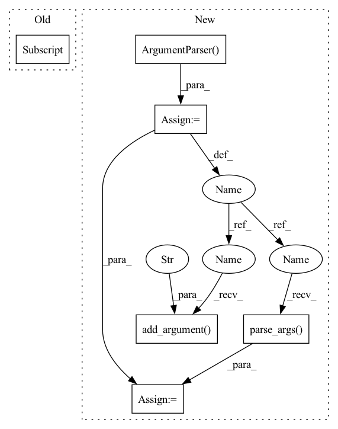

Pattern ID :24405

Before Change
),
)
query = mercury.geometry.transform_points(
pcd, mercury.geometry.quaternion_matrix(pose_actual[1])
)
auc = mercury.geometry.average_distance_auc(
reference, query, max_threshold=0.1
After Change
def main():
parser = argparse.ArgumentParser(
formatter_class=argparse.ArgumentDefaultsHelpFormatter,
)
parser.add_argument("--gui", action="store_true", help="gui")
args = parser.parse_args()
seed = 5
env = PickAndPlaceEnv(gui=args.gui)
In pattern: SUPERPATTERN
Frequency: 3
Non-data size: 6
Instances
Fragment ID: 75750906
Project Name: wkentaro/safepicking
Commit Name: a9b9e421e5a8b011d827d37de528d27ba58bd399
Time: 2021-05-28
Author: www.kentaro.wada@gmail.com
File Name: examples/reorient/create_dataset.py
M Class Name: AnonimousClass
N Class Name: AnonimousClass
M Method Name: main(0)
N Method Name: main(0)
M Parent Class:
N Parent Class:
M File Name: examples/reorient/create_dataset.py
N File Name: examples/reorient/create_dataset.py
M Start Line: 20
M End Line: 54
N Start Line: 20
N End Line: 63
'>
Before Change
tokenizer = BertTokenizer.from_pretrained(TOKENIZER_DIR)
transformer = Transformer.load_from_checkpoint(TRANSFORMER_CKPT)
transformer.eval()
seoul2jeju = load_seoul2jeju()[:10]
seouls = [seoul for seoul, _ in seoul2jeju]
jejus = [jeju for _, jeju in seoul2jeju]
X = InferInputsBuilder(tokenizer, config["max_length"])(srcs=jejus)
tgt_ids = transformer.predict(X)
After Change
def main():
parser = argparse.ArgumentParser()
parser.add_argument("--jeju", type=str, default="딱 그 말을 허드라게")
args = parser.parse_args()
config = load_config()
config.update(vars(args))
with wandb.init(entity="eubinecto", project="dekorde") as run:
artifact = run.use_artifact("transformer:latest")
'>
Fragment ID: 75750905
Project Name: eubinecto/dekorde
Commit Name: fd3b05ba0d98e727d7c58233ac0e8c0449890275
Time: 2021-12-06
Author: eubinecto
File Name: main_predict.py
M Class Name: AnonimousClass
N Class Name: AnonimousClass
M Method Name: main(0)
N Method Name: main(0)
M Parent Class:
N Parent Class:
M File Name: main_predict.py
N File Name: main_predict.py
M Start Line: 10
M End Line: 19
N Start Line: 11
N End Line: 27
'>
Before Change
),
)
query = mercury.geometry.transform_points(
pcd, mercury.geometry.quaternion_matrix(pose_actual[1])
)
auc = mercury.geometry.average_distance_auc(
reference, query, max_threshold=0.1
After Change
def main():
parser = argparse.ArgumentParser(
formatter_class=argparse.ArgumentDefaultsHelpFormatter,
)
parser.add_argument("--gui", action="store_true", help="gui")
args = parser.parse_args()
seed = 5
env = PickAndPlaceEnv(gui=args.gui)
'>
Fragment ID: 75750904
Project Name: wkentaro/reorientbot
Commit Name: a9b9e421e5a8b011d827d37de528d27ba58bd399
Time: 2021-05-28
Author: www.kentaro.wada@gmail.com
File Name: examples/reorient/create_dataset.py
M Class Name: AnonimousClass
N Class Name: AnonimousClass
M Method Name: main(0)
N Method Name: main(0)
M Parent Class:
N Parent Class:
M File Name: examples/reorient/create_dataset.py
N File Name: examples/reorient/create_dataset.py
M Start Line: 20
M End Line: 54
N Start Line: 20
N End Line: 63